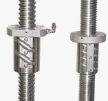
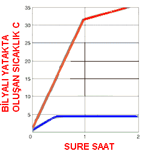

|
Yüksek
Hýzda Talaþlý Ýmalat, Havacýlýk/ Uzay sanayi, Otomotiv ve
Kalýpçýlýk konularýnda CNC tezgahlarda parça iþleyen firmalarda
kullanýlmaya baþlanan yeni bir iþleme yöntemidir. Bu yöntem
genel anlamda yüksek devir ve ilerlemelerde, düþük kesme pasosu
ile küçük takýmlar kullanýlarak yapýlan kesme iþlemidir.
Yüksek
Hýzda iþleme yapýlabilmesi için gerekli þartlar olan CNC tezgahýn
mekanik yapýsý, CNC kontrol sistemi, CAM sistemi, DNC sistemi
ve kullanýlcak kesici takýmýn belirli þartlarý saðlamasý ile
gerçekleþtirilebilir
High Speed CNC tezgahlarýn kontrol sisteminin performansý
genellikle program datasýnýn bir bloðunu, iþleme alabilme
yani tezgahta harekete dönüþtürme süresi olarak ölçülür. Standart
ivmesi 1m/s² bir CNC tezgahta bir satýr bloðun iþleme alýnma
süresi 10 milisaniye olduðu zaman 5-10 mikron tolerans bandý
içinde kalarak doðru kordinatlarda pozisyonlama yapabilmesini
gerektirir. Ancak yüksek hýzda iþleme yapabilen yeni nesil
CNC tezgahlarda ivmelenme deðerleri 3 veya 4 katýna çýkabilmektedir.
Bu durumda tezgahýn bir satýr bloðunu iþleme süresi 4 milisaniyeye
kadar düþmesi ile ayný toleranslarda parça iþlenmesini saðlayabilmesi
gerekir
Bütün
bu iþlemler ile beraber High Speed CNC tezgahlarda kontrol
sisteminin iþlenen blok satýrýnýn çok ötesindeki satýrlarý
daha önceden okuyup yorumlamasý gerekmekedir. Bu sayede tezgah
hareketlerinin kesintisiz olmasý saðlanýr. Aksi taktirde çok
küçük süreli de olsa meydana gelebilecek olan hareket kesintilerinde
yüzey üzerinde pürüzler oluþmasý engellenemez...
Yukarýda
belirtilen hýzlarda metal kesme iþlemlerinde tezgah mili (spindle),
eksen sürücü motorlarý, kontrol ünitesi, kesici takým, soðutma
sývýsý, tezgah rijitliði gibi tüm etkenlerin bir sinerji oluþturarak,
kesici takým üzerine gelen kesme kuvvetleri, iþleme süresi
azalýr, takým ömrü artar,yüzey kalitesi ayrýca bir finiþ iþlemine
gerek kalmayacak kadar düzgün olarak elde edilir.
High
Speed CNC lerde normal CNC tezgahlara göre ýsý yükselmesi
ve titreþimlerin daha fazla olmasý beklenir. Dolayýsý ile
High Speed CNC tezgahlarýn mekanik olarak yapýsýnýn farklý
olmasý zorunluluðu ortaya çýkmaktadýr
CNC tezgahlarýn hareket sistemi bilindiði gibi bilyalý yataklar
ile saðlanmaktadýr.
High
speed CNC tezgahlarda kullanýlan bilyalý yataklar þekilde
görüleceði gibi farklý çap ve adýmda imal edilmektedir. Çap
ve adýmdaki farklýlýk döme hýzý, tork ve eksen motorununu
gücü ve bütün bunlar sayesinde tezgah tablasýnýn istenilen
ilerleme deðerlerinde ilerlemesi ve eksenel itme kuvvetini
belirler. Büyük adýmlý bilyalý yatakta, küçük adýmlý bilyalý
yataða göre ayný mesafeyi gidebilmek için eksen motorunun
daha az dönmesi ancak daha güçlü bir motor kullanýlmasý gerekir.
Dönme sayýsýnýn artmasý yataklarda daha fazla sürtünme meydana
getireceðinden sürtünmeden doðan bir ýsý birikimi ortaya çýkar.
Oluþan ýsý birikimi ise tezgah yataklarýnda istenmeyen bir
genleþmeye sebep olur.
Yapýlan
denemelerde, 500 mm boyundaki bir bilyalý yatakta 1°C'lik
sýcaklýk yükselmesi 0.006mm'lik genleþmeye sebep olmaktadýr.
Genleþmeden meydana gelen pozisyonlama hatasý ise CNC tezgahlarda
istenilmeyen bir durumdur. Bilyalý yataklarda oluþan ýsýnýn
alýnabilmesi için, yeni teknoloji bilyalý yataklara delik
delinerek, deliklerin içerisinden Ethylin-Glycol soðutucu
maddesi dolaþtýrýlmaktadýr. Bu sayede hýzlý hareketlerden
kaynaklanan ýsý alýnarak yataklarda oluþabilecek genleþme
azaltýlmaktadýr.
Yandaki
grafikte, 40mm çapýndaki bir bilyalý yatakta 10m/dak ilerleme
ile 500m lik hareket sonunda soðutma sistemi kullanan bir
yatak ile kullanýlmayan yatak arasýndaki sýcaklýk yükselmesindeki
fark verilmiþtir.
High
Speed Tezgahlarda spindle max devrinin 12.000 dev/dk'dan baþlamasý
önerilir. Bu sayede Yüksek devirlerde çalýþma imkaný saðlanarak
minimum yüzey pürüzlülük deðerlerine ulaþýlýr.Yüksek devirlerde
çalýþmaktan kaynaklanan tork deðerlerinin düþmesi direkt drive
ve built in motorlarýn kullanýlmasýyla minimize edilmiþ olur.
CNC
tezgahlarda yüksek devirlerde çalýþma esnasýnda çýkan problemlerden
biri de yüksek devirlerde takýmlarýn salgýsýnýn artmasý problemidir.
Bu sebeble 15.000 dev/dk ve daha yüksek devirli tezgahlarda
BT, ISO gibi konik çektirmeli tutucular yerine BBT tarzý duble
kontak (konik ve alýn çektirmeli) tutucular kullanýlarak salgý
problemi en aza indirilmesi saðlanýr.
Yüksek
Hýzla Kesim Yapan (high speed) CNC Tezgahlarda yüksek kesme
hýzlarýna çýkýldýðýnda profilli, dar açýlý kesimlerde düzgün
ve iz yapmadan kesim yapýlabilmesi yüzey pürüzlülük deðerlerinin
çok düþük olmasý istenen parçalarda RISC iþlemcili NURBS Interpolasyon
iþlemi uygulanýr. (NURBS&RISC), Bu uygulamayý genellikle
Uçak Sanayi, Týp sektörü, Hassasiyetin çok yüksek olduðu otomotiv
parçalarý ve hassas kalýp imalatýnda kullanýlýr.
RISC iþlemci kullanýlan kontrol Ünitelerinde düzlemsel ve
dairesel yüzeyler elde edilirken her 0.00 1 mm ye 1 nokta
koyup bu noktalar doðrularla birleþtirilerek yüzeyler tanýmlanýr.
RISC Ýþlemci kullanýlmayan kontrol ünitelerinde yüzeyler tanýmlanýrken
ise 1 mm ye 1 nokta koyup bu noktalar doðrularla birleþtirilerek
yüzeyler tanýmlanýr. NURBS Ýnterpolasyonu ise imal edilecek
parçanýn tanýtýlmasýnda notalarýn düzlemlerle birleþtirilmesiyle
deðil bu noktalarýn interpolasyon þeklinde ortalama eðrilerle
birleþtirilmesiyle tanýmlanýr. NURS&RISC kullanýlan tezgahlarda
yüzey hassasiyeti ve kesme hýzlarý max seviyelere çýkar.
"High
Speed" kavramý, sanayicilerin bir çoðunun anladýðý þekilde
tek bir özelliðe baðlý olmayýp; tezgahýn birçok özelliklerinin
bir arada saðlanmasýyla oluþmaktadýr. Kýsa bir gelecektede
bu tür makinelerin yaygýn þekilde kullanýlarak imalatýmýza
yön vermesi daha hýzlý ve daha hassas imalat yapabilmemiz
saðlanacaktýr.
Bu
yazý, Tezmaksan "Machine
Tool Express" Dergisi Temmuz-Aðustos 2006 Sayý:10 Sayfa
19'da yayýnlanmýþtýr.
|